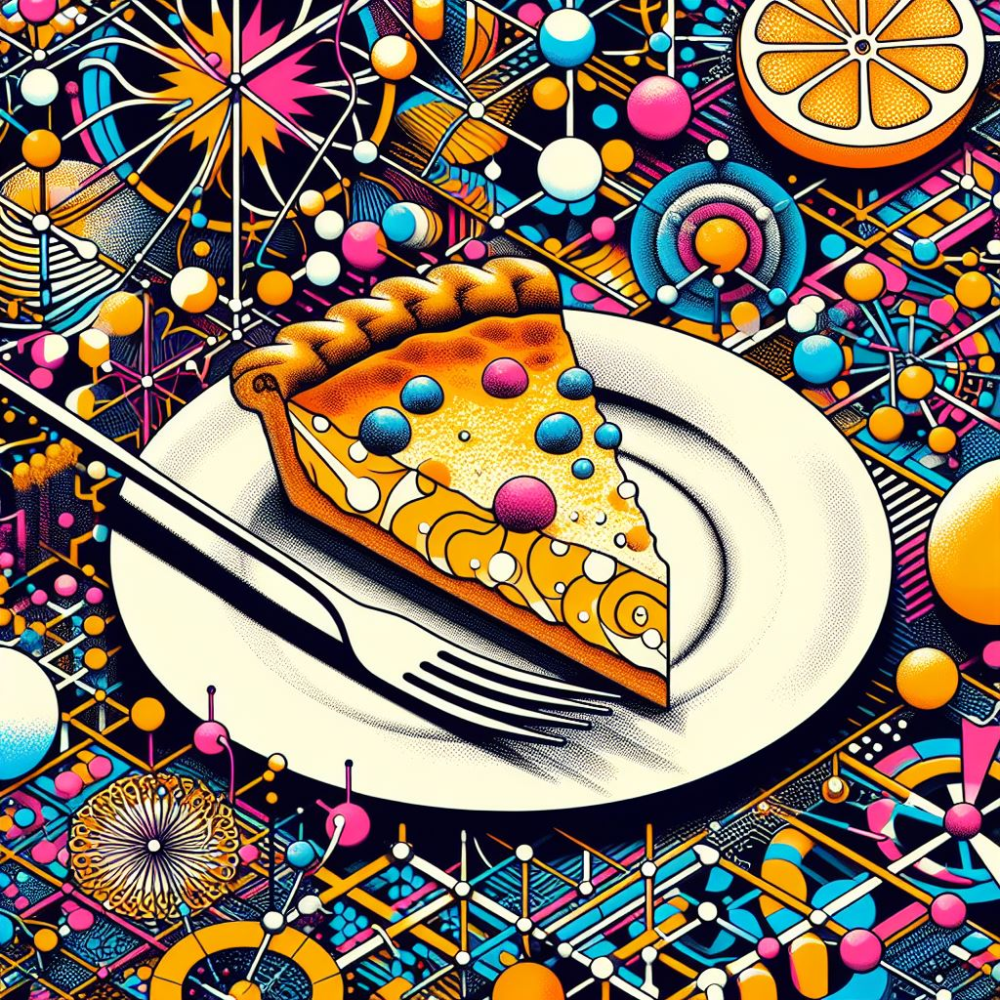

Quantum Quiche

Quantum Quiche: A savory pie that can alter your reality with every slice.
Ingredients
- 1 9-inch pie crust
- 4 eggs
- 1 1/2 cups of heavy cream
- 1/4 teaspoon of salt
- 1/4 teaspoon of black pepper
- 1/4 teaspoon of nutmeg
- 1 cup of shredded cheese
- 1/4 cup of quantum particles (available at your nearest interdimensional market)
- Any fillings of your choice (such as bacon, spinach, mushrooms, etc.)
- Preheat oven to 375°F and place the pie crust in a pie dish.
- In a large bowl, whisk the eggs, cream, salt, pepper, nutmeg, and quantum particles.
- Sprinkle the cheese and fillings over the pie crust, then pour the egg mixture over them.
- Bake for 35 to 40 minutes or until set.
- Let it cool slightly before serving and enjoy your quantum experience!